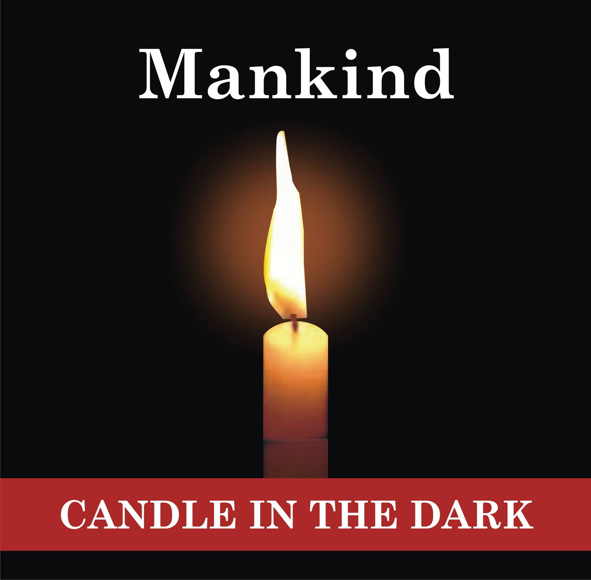
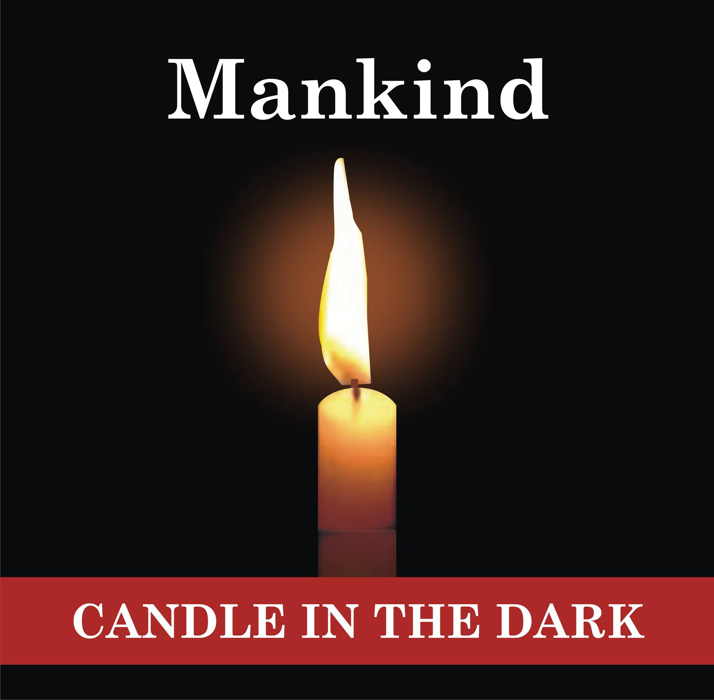

Meet Our Team
Ut aut reiciendis voluptatibus maiores alias consequatur aut perferendis doloribus asperiores repellat.
X
Dr. Starr Horsfall
Dr. Starr Horsfall is a father, and son of the kalabari and Ikwerre kingdoms in Rivers State Nigeria. A medical doctor with decades of clinical experience . He has a masters degree in business administration, and a masters in healthcare administration. He is a philanthropist, humanitarian, businessman, and a motivational speaker with roots in the kalabari. Ikwerre and etche kingdoms in Rivers State, Nigeria. On his maternal side, he has roots in the Yoruba kingdom and Sierra Leone.
He serves Prime Cornerstone Afro Initiative as the chairman and CEO. He is an avid traveler, physical fitness enthusiast and a proud father. He believes in an Africa that was great and the Africa that will be even greater.
X
Tommy Udoh
Tommy Udoh holds Bsc in Community Development/Social Work University of Port Harcourt and has over 20 years experience initiating, developing, implementing and Monitoring/Evualting programs in Health, Good governance, economic empowerment, gender, Education, rural infrastructure.
X
Abdul Rasheed Ibn Isuman
Abdul Rasheed Ibn Isuman Ibn Abdul Rahman Ibn Ali hails from Ebo State and grew up in the garden city of Port Harcourt. He has and continues to deliver projects across Nigeria with commercial and NGO entities. He holds degrees in Engineering and Project Management, working with a notable firm in the UK.
X
Umanta
A dynamic, brilliant lawyer, Umanta holds a Bachelor of Law Degree (L.L.B) from the University of Ibadan, Oyo State, Nigeria, Barrister at Law Degree (B.L) from the Nigerian Law School and L.L.M (in view), University of London. He is a member of the Nigerian Bar. With about 15 years wealth of cognate experiences from Legal practice, company secretarial and advisory duties, arbitration, mediation, negotiation and conciliation, administration, Human Resources, project management public and relationship management, Umanta has become a very versatile lawyer with wide range of hands-on practical experiences evidenced by track records of enviable results. Umanta is well traveled. He loves music and dancing.
He is the Vice Chairman of prime Cornerstone Afro Initiative
X
Damiete Horsfall
Damiete Samuel-Horsfall is an Engineer, a Tech Enthusiast, a Passionate Nigerian, and a Proud indigene of Rivers State Nigeria. He holds a Master’s Degree in Systems Engineering and Design and works as an Automotive Systems Engineer where he specializes in the Design and Implementation of Complex Vehicle Systems. His professional background provides a strong focus on Systems Thinking which he readily applies in his role at PCAI. He serves as a board member of the Prime Cornerstone Afro Initiative with a strong focus on Technological Capacity Building.
X
Damiete Horsfall
Damiete Samuel-Horsfall is an Engineer, a Tech Enthusiast, a Passionate Nigerian, and a Proud indigene of Rivers State Nigeria. He holds a Master’s Degree in Systems Engineering and Design and works as an Automotive Systems Engineer where he specializes in the Design and Implementation of Complex Vehicle Systems. His professional background provides a strong focus on Systems Thinking which he readily applies in his role at PCAI. He serves as a board member of the Prime Cornerstone Afro Initiative with a strong focus on Technological Capacity Building.
X
Arinola Ologunleko (Mrs.)
Arinola is a Business Change and Transformation Management expert who currently resides in the United Kingdom with her family. A graduate of International Business Economics from the Middlesex University Business School, London and alumni of the prestigious Cambridge University, UK where she studied Project Management. As a certified Project Management professional and also a certified Business Analyst from the UK, she run the affairs of Rosehall Resources Limited; a consultancy firm registered and operating both in the UK and in Nigeria. Arinola is a seasoned professional with well over two decades of work experience and corporate engagements. She comes to the board of Cornerstone Initiative with a lot of experience and corporate management skills. Arinola is also a financial analyst and an ex-banker with a career spanning over ten years in the Nigerian banking sector having served at various institutions like First Bank Plc, The Central Bank of Nigeria, Oceanic Bank Plc and Bank PHB Plc.
Dr. Starr Horsfall
Chairman and CEO
Tommy Udoh
Acting Programs Director
Abdul Rasheed Ibn Isuman


 
